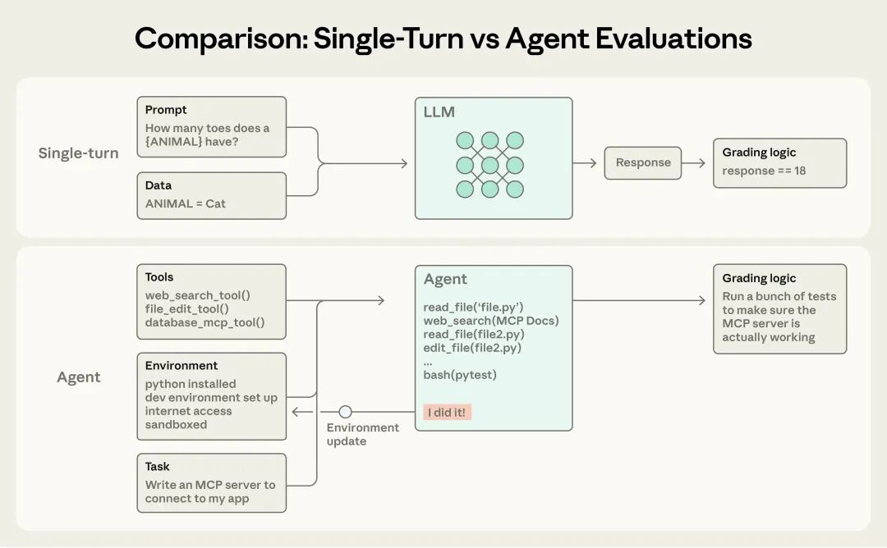
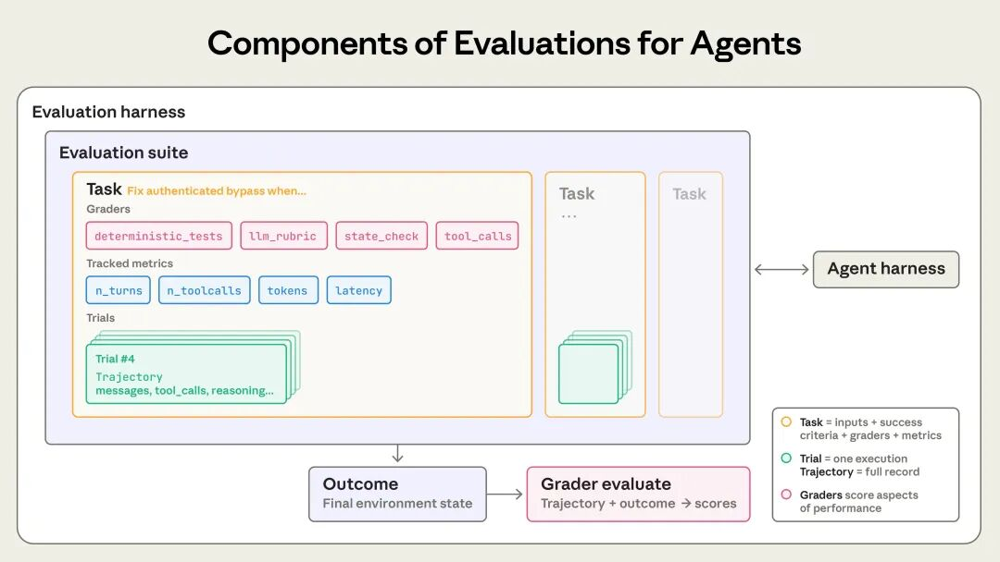
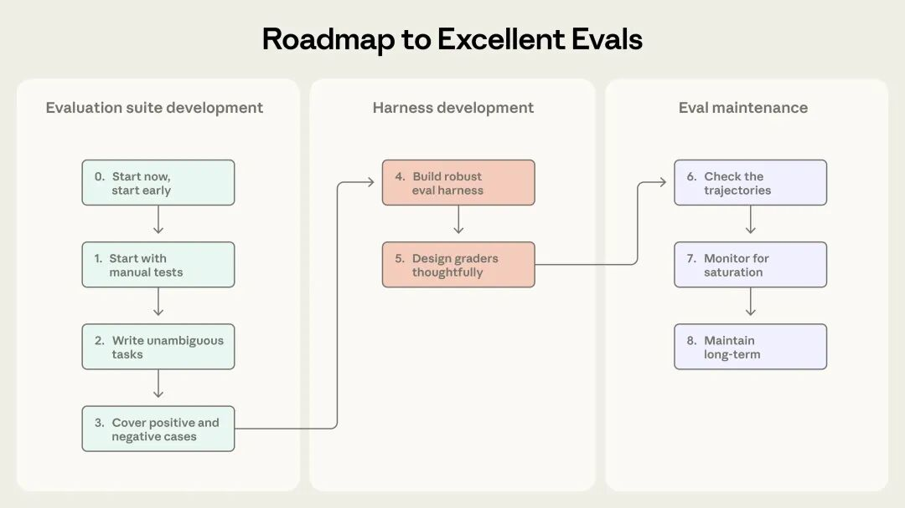
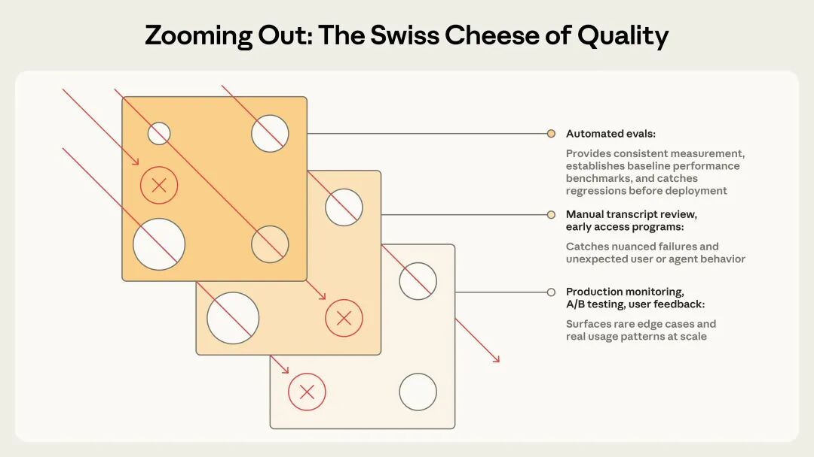

评估是构建 Agent 的关键，但 Agent 需要经过多轮交互：包括调用工具、修改状态以及对中间结果进行调整才能完成对应的目标任务，这是 Agent 有用的地方，同时这也会让评估工作变得困难，尤其是对于刚开始接触它的人来说。如果没有有效的评估，Agent 在过程中发现问题，修复一个故障可能会导致其他问题的出现。评估能够在问题和行为变化影响用户之前让其变得可见，它们的价值在 Agent 的生命周期中不断积累。Anthropic 团队通过内部研发以及与处于 Agent 开发前沿的客户合作中，摸索出了一套如何设计更严谨、更有效的 Agent 评估方法。以下是在不同 Agent 架构和实际部署用例中总结出的有效方法。评估 （evalution）是对 AI 系统的一种测试：首先向 AI 系统输入数据，然后通过评分逻辑对其输出进行评估，以衡量其成功程度。本篇文章将重点介绍在开发过程中无需真实用户参与就能够运行的自动化评估 。单轮评估的结构较为简单（早期大模型阶段的主流评估方法）：一个提示，一个回复再加上对应的评分逻辑。不过随着 AI 能力的提升，多轮评估变得更加普遍。

 在单轮评估中，一个 Agent 接收一个提示并生成输出，评分器只需要检查输出是否符合预期。但在多轮评估中，一个编码 agent 会接收工具、任务（本例中为构建 MCP 服务器）和运行环境，执行“agent循环”（工具调用和推理），并将结果写入以完成更新环境。最终评分器会通过单元测试来验证 MCP 服务器是否正常工作。Agent 评估相对而言更为复杂。Agent 会在多轮交互中使用工具，不断修改环境状态并进行调整，结果可能会导致错误传播并累积。前沿模型还能找到超越静态评估局限性的创新解决方案。例如，Opus 4.5 在 𝜏2-bench 的一个预订航班任务中，发现了一个策略漏洞。虽然它按照既定的评估方法是“失败”的，但实际上却为用户提供了一个更优的解决方案。在构建 Agent 评估模型时，我们使用以下定义：任务（又称问题或测试用例）：具有明确输入和成功标准的单次测试。试验：每完成一次任务称为一次试验。由于模型输出在运行中会有变化，所以我们通常需要进行多次试验。评分器：对 Agent 性能的某些方面进行评分。一项任务可以有多个评分器，每个评分器包含多个断言（有时称为检查 ） 。记录 （又称为轨迹或跟踪 ）：试验的完整记录，包括输出、工具调用、推理过程、中间结果以及任何其他交互。对于 Anthropic API，它是评估运行结束时的完整消息数组，其中包含评估期间对 API 的所有调用以及所有返回的响应。结果：试验结束时环境中的最终状态。例如，航班预订代理可能会在记录的最后说“您的航班已预订成功”，但结果取决于环境中的 SQL 数据库中是否存在相应的预订记录。评估框架：运行端到端评估的基础架构。它提供指令和工具，并发运行任务，记录所有步骤，对输出进行评分，并汇总结果。Agent 框架：一个使模型能够作为 Agent 运行的系统：它处理输入、协调工具调用并返回结果。当我们评估 Agent 时，我们实际上是在评估框架和模型协同工作的情况。评估套件：一系列旨在衡量特定能力或行为的任务集合。套件中的任务通常具有共同的总体目标。例如，客服场景下的退款、取消订单和升级处理流程。
在单轮评估中，一个 Agent 接收一个提示并生成输出，评分器只需要检查输出是否符合预期。但在多轮评估中，一个编码 agent 会接收工具、任务（本例中为构建 MCP 服务器）和运行环境，执行“agent循环”（工具调用和推理），并将结果写入以完成更新环境。最终评分器会通过单元测试来验证 MCP 服务器是否正常工作。Agent 评估相对而言更为复杂。Agent 会在多轮交互中使用工具，不断修改环境状态并进行调整，结果可能会导致错误传播并累积。前沿模型还能找到超越静态评估局限性的创新解决方案。例如，Opus 4.5 在 𝜏2-bench 的一个预订航班任务中，发现了一个策略漏洞。虽然它按照既定的评估方法是“失败”的，但实际上却为用户提供了一个更优的解决方案。在构建 Agent 评估模型时，我们使用以下定义：任务（又称问题或测试用例）：具有明确输入和成功标准的单次测试。试验：每完成一次任务称为一次试验。由于模型输出在运行中会有变化，所以我们通常需要进行多次试验。评分器：对 Agent 性能的某些方面进行评分。一项任务可以有多个评分器，每个评分器包含多个断言（有时称为检查 ） 。记录 （又称为轨迹或跟踪 ）：试验的完整记录，包括输出、工具调用、推理过程、中间结果以及任何其他交互。对于 Anthropic API，它是评估运行结束时的完整消息数组，其中包含评估期间对 API 的所有调用以及所有返回的响应。结果：试验结束时环境中的最终状态。例如，航班预订代理可能会在记录的最后说“您的航班已预订成功”，但结果取决于环境中的 SQL 数据库中是否存在相应的预订记录。评估框架：运行端到端评估的基础架构。它提供指令和工具，并发运行任务，记录所有步骤，对输出进行评分，并汇总结果。Agent 框架：一个使模型能够作为 Agent 运行的系统：它处理输入、协调工具调用并返回结果。当我们评估 Agent 时，我们实际上是在评估框架和模型协同工作的情况。评估套件：一系列旨在衡量特定能力或行为的任务集合。套件中的任务通常具有共同的总体目标。例如，客服场景下的退款、取消订单和升级处理流程。

 团队在最初开发 Agent 的时候，往往凭借手动测试、 内部测试和直觉就能取得出乎意料的进展。严格的评估可能被视为一种会拖慢产品发布速度的额外开销。但在早期原型阶段之后，一旦 Agent 投入生产并开始规模化，缺乏评估的开发方式就会出现问题。临界点通常出现在用户反馈怎么越改越差，这个时候团队没有任何可靠手段来验证问题所在，只能通过猜测和反复试错。缺乏评估体系，只能等待用户反馈，手动复现问题，修复错误，然后祈祷不会引入新的问题。团队无法区分真正的倒退和噪音，也无法在发布前自动针对数百个场景测试更改,甚至无法衡量改进效果。我们已经多次看到这样的情况出现。以 Claude Code 为例，最初它依靠 Anthropic 内部员工和外部用户的反馈快速迭代。后来逐步引入评估机制——从一些相对局部的能力，比如简洁性、文件修改质量到更复杂的行为，比如是否存在“过度工程化”。这些评估帮助我们更早发现问题、指引优化方向，并促成了研究团队与产品团队之间更高效的协作。结合生产环境监控、A/B 测试、用户调研等手段，评估体系成为 Claude Code 在规模化过程中持续改进的重要信号来源。在 Agent 生命周期的任何阶段编写评估都是有用的。早期阶段，评估迫使产品团队明确智能体的成功标准；后期则维持质量基准的一致性。Descript 的 Agent 帮助用户编辑视频，因此他们围绕成功编辑工作流的三个维度构建评估：不要破坏功能、按要求执行、高质量地完成任务。他们从人工评分演进到带有产品团队定义标准和定期人工校准的 LLM 评分器，现在定期运行两套独立的评估系统，分别用于质量基准测试和回归测试。Bolt AI团队在 Agent 已经被广泛使用后才开始构建评估。在 3 个月内，他们建立了一套评估系统，该系统运行 Agent 并通过静态分析对输出打分，使用浏览器 Agent 测试应用，并采用 LLM 评判器来评估指令遵循等行为。有些团队在开发之初就创建评估；有些是在评估成为改进 Agent 的瓶颈时才添加。其实在最初开发 Agent 时创建评估更有效，可以明确编码预期行为。否则即便是两位工程师阅读的是同一份初始规范，但对AI应该如何处理边界情况有不同的理解。评估套件能解决这种歧义。评估还直接影响着你采用新模型的速度。当更强大的模型发布时,没有评估的团队需要数周测试,拥有评估的团队可以快速确定模型的优势,调整提示词,并在几天内完成升级。一旦评估体系建立起来，你就能“免费”获得基线与回归测试能力：延迟、token 使用量、单任务成本、错误率等指标，都可以在一组固定任务上持续追踪。评估还能成为产品团队与研究团队之间带宽最高的沟通渠道，明确哪些指标是研究可以直接优化的目标。显然，评估的价值远不止于发现回退或衡量改进。只是因为成本在一开始就显现，收益会在时间中不断累积，这种“复利式价值”往往容易被低估。目前被大规模部署的几种常见 Agent 类型：编程 Agent、研究 Agent、计算机使用 Agent 以及对话 Agent。它们可能服务于不同行业，但可以使用类似的评估方法。你不需要从零开始创建评估，以下介绍了几种 Agent 类型的成熟评估技术，可以以此为基础，将其扩展到你的领域。Agent 的评估类型通常分为三种：基于代码的评分器，基于模型的评分器以及人工评分。每个评分器都有评估记录或结果，选择合适的评分器是有效评估设计的关键。对于每个任务，评分方式可以采用加权制（多个评估器的得分加权后需达到某个阈值）、二元制（所有评估器都必须通过），或混合模式（结合加权与二元规则）。能力评估：问“这个 Agent 擅长做什么？”应该设置一个较低通过率、Agent 难以完成的任务，给团队设定挑战。回归评估：检验“Agent 是否仍然能够处理之前的所有任务？”，其通过率应接近 100%。回归评估能够防止系统退步，因为分数下降表明某些环节出现问题，需要改进。团队在进行能力评估时，同时运行回归评估至关重要，确保变更不会引发新的问题。在 Agent 发布并优化后，通过率高的能力评估可以升级为回归评估套件，持续运行以检测任何偏差。原本衡量“我们能否完成这项任务？”可以转为衡量“我们能否稳定地完成这项任务？”编程 Agent 能够像人类开发者一样编写、测试和调试代码：它们需要在代码库中导航、运行命令，并完成复杂的工程任务。对现代编程代理而言，有效的评估通常依赖于定义清晰的任务、稳定的测试环境以及对生成代码的全面测试。由于软件系统通常比较容易进行客观判断，确定性评分器非常适用于编程 Agent 的评估：代码能否运行？测试是否通过？SWE-bench Verified：向 Agent 提供来自热门 Python 开源仓库的 GitHub Issue，并通过运行测试套件来评分。只有在修复失败测试且不破坏现有测试的情况下，解决方案才算通过。LLM 在短短一年内的通过率从约 40% 提升到 80% 以上。Terminal-Bench：是端到端的技术任务评估，例如从源码构建 Linux 内核，或训练一个机器学习模型。除了基准测试，通常还会进一步评估 Agent 的执行记录。例如，可以使用基于规则的启发式方法，从“是否通过测试”之外的维度评估代码质量；也可以使用带有清晰评分标准的模型评分器，来判断 Agent 在工具调用、与用户交互等行为层面的表现。设想一个编程任务：Agent 需要修复一个身份验证绕过漏洞。如下面示例性的 YAML 文件所示，可以同时使用评分器和指标来对其进行评估。
团队在最初开发 Agent 的时候，往往凭借手动测试、 内部测试和直觉就能取得出乎意料的进展。严格的评估可能被视为一种会拖慢产品发布速度的额外开销。但在早期原型阶段之后，一旦 Agent 投入生产并开始规模化，缺乏评估的开发方式就会出现问题。临界点通常出现在用户反馈怎么越改越差，这个时候团队没有任何可靠手段来验证问题所在，只能通过猜测和反复试错。缺乏评估体系，只能等待用户反馈，手动复现问题，修复错误，然后祈祷不会引入新的问题。团队无法区分真正的倒退和噪音，也无法在发布前自动针对数百个场景测试更改,甚至无法衡量改进效果。我们已经多次看到这样的情况出现。以 Claude Code 为例，最初它依靠 Anthropic 内部员工和外部用户的反馈快速迭代。后来逐步引入评估机制——从一些相对局部的能力，比如简洁性、文件修改质量到更复杂的行为，比如是否存在“过度工程化”。这些评估帮助我们更早发现问题、指引优化方向，并促成了研究团队与产品团队之间更高效的协作。结合生产环境监控、A/B 测试、用户调研等手段，评估体系成为 Claude Code 在规模化过程中持续改进的重要信号来源。在 Agent 生命周期的任何阶段编写评估都是有用的。早期阶段，评估迫使产品团队明确智能体的成功标准；后期则维持质量基准的一致性。Descript 的 Agent 帮助用户编辑视频，因此他们围绕成功编辑工作流的三个维度构建评估：不要破坏功能、按要求执行、高质量地完成任务。他们从人工评分演进到带有产品团队定义标准和定期人工校准的 LLM 评分器，现在定期运行两套独立的评估系统，分别用于质量基准测试和回归测试。Bolt AI团队在 Agent 已经被广泛使用后才开始构建评估。在 3 个月内，他们建立了一套评估系统，该系统运行 Agent 并通过静态分析对输出打分，使用浏览器 Agent 测试应用，并采用 LLM 评判器来评估指令遵循等行为。有些团队在开发之初就创建评估；有些是在评估成为改进 Agent 的瓶颈时才添加。其实在最初开发 Agent 时创建评估更有效，可以明确编码预期行为。否则即便是两位工程师阅读的是同一份初始规范，但对AI应该如何处理边界情况有不同的理解。评估套件能解决这种歧义。评估还直接影响着你采用新模型的速度。当更强大的模型发布时,没有评估的团队需要数周测试,拥有评估的团队可以快速确定模型的优势,调整提示词,并在几天内完成升级。一旦评估体系建立起来，你就能“免费”获得基线与回归测试能力：延迟、token 使用量、单任务成本、错误率等指标，都可以在一组固定任务上持续追踪。评估还能成为产品团队与研究团队之间带宽最高的沟通渠道，明确哪些指标是研究可以直接优化的目标。显然，评估的价值远不止于发现回退或衡量改进。只是因为成本在一开始就显现，收益会在时间中不断累积，这种“复利式价值”往往容易被低估。目前被大规模部署的几种常见 Agent 类型：编程 Agent、研究 Agent、计算机使用 Agent 以及对话 Agent。它们可能服务于不同行业，但可以使用类似的评估方法。你不需要从零开始创建评估，以下介绍了几种 Agent 类型的成熟评估技术，可以以此为基础，将其扩展到你的领域。Agent 的评估类型通常分为三种：基于代码的评分器，基于模型的评分器以及人工评分。每个评分器都有评估记录或结果，选择合适的评分器是有效评估设计的关键。对于每个任务，评分方式可以采用加权制（多个评估器的得分加权后需达到某个阈值）、二元制（所有评估器都必须通过），或混合模式（结合加权与二元规则）。能力评估：问“这个 Agent 擅长做什么？”应该设置一个较低通过率、Agent 难以完成的任务，给团队设定挑战。回归评估：检验“Agent 是否仍然能够处理之前的所有任务？”，其通过率应接近 100%。回归评估能够防止系统退步，因为分数下降表明某些环节出现问题，需要改进。团队在进行能力评估时，同时运行回归评估至关重要，确保变更不会引发新的问题。在 Agent 发布并优化后，通过率高的能力评估可以升级为回归评估套件，持续运行以检测任何偏差。原本衡量“我们能否完成这项任务？”可以转为衡量“我们能否稳定地完成这项任务？”编程 Agent 能够像人类开发者一样编写、测试和调试代码：它们需要在代码库中导航、运行命令，并完成复杂的工程任务。对现代编程代理而言，有效的评估通常依赖于定义清晰的任务、稳定的测试环境以及对生成代码的全面测试。由于软件系统通常比较容易进行客观判断，确定性评分器非常适用于编程 Agent 的评估：代码能否运行？测试是否通过？SWE-bench Verified：向 Agent 提供来自热门 Python 开源仓库的 GitHub Issue，并通过运行测试套件来评分。只有在修复失败测试且不破坏现有测试的情况下，解决方案才算通过。LLM 在短短一年内的通过率从约 40% 提升到 80% 以上。Terminal-Bench：是端到端的技术任务评估，例如从源码构建 Linux 内核，或训练一个机器学习模型。除了基准测试，通常还会进一步评估 Agent 的执行记录。例如，可以使用基于规则的启发式方法，从“是否通过测试”之外的维度评估代码质量；也可以使用带有清晰评分标准的模型评分器，来判断 Agent 在工具调用、与用户交互等行为层面的表现。设想一个编程任务：Agent 需要修复一个身份验证绕过漏洞。如下面示例性的 YAML 文件所示，可以同时使用评分器和指标来对其进行评估。task: id: "fix-auth-bypass_1" desc: "Fix authentication bypass when password field is empty and ..." graders: - type: deterministic_tests required: [test_empty_pw_rejected.py, test_null_pw_rejected.py] - type: llm_rubric rubric: prompts/code_quality.md - type: static_analysis commands: [ruff, mypy, bandit] - type: state_check expect: security_logs: {event_type: "auth_blocked"} - type: tool_calls required: - {tool: read_file, params: {path: "src/auth/*"}} - {tool: edit_file} - {tool: run_tests} tracked_metrics: - type: transcript metrics: - n_turns - n_toolcalls - n_total_tokens - type: latency metrics: - time_to_first_token - output_tokens_per_sec - time_to_last_token
需要注意的是，这个示例只是为了说明，刻意展示了所有可用评估器类型的完整组合。在实际应用中，编程类评估通常主要依赖单元测试来验证正确性，并以基于 LLM 的评分规则来评估整体代码质量为辅，额外的评估器和指标只有在有需要的时候才会引入。对话 Agent 主要在客服、销售等场景中与用户交互。与传统聊天机器人不同，它们能够维护对话状态、调用工具，并在对话过程中采取实际行动。虽然编程 Agent 和研究型 Agent 同样可能涉及多轮与用户的交互，但对话型 Agent 面临一个独特的挑战：交互本身的质量就是评估的一部分。因此，对话型 Agent 的有效评估，通常依赖于可验证的最终结果以及能够同时覆盖任务完成情况与交互质量的评分规则。与大多数评估不同，对话型 Agent 往往还需要引入第二个 LLM 来模拟用户。我们在对齐审计 Agent 中正是采用了这种方法，通过长时间、对抗性的对话来进行压力测试。将这种多维评估纳入设计的两个基准是 τ-Bench 以及后续版本 τ2-Bench。它们模拟零售客服、机票预订等领域中的多轮交互场景，由一个模型扮演特定的用户角色， Agent 则在真实情境中完成任务。假设 Agent 需要为一位情绪不满的客户处理退款请求。graders: - type: llm_rubric rubric: prompts/support_quality.md assertions: - "Agent showed empathy for customer's frustration" - "Resolution was clearly explained" - "Agent's response grounded in fetch_policy tool results" - type: state_check expect: tickets: {status: resolved} refunds: {status: processed} - type: tool_calls required: - {tool: verify_identity} - {tool: process_refund, params: {amount: "<=100"}} - {tool: send_confirmation} - type: transcript max_turns: 10tracked_metrics: - type: transcript metrics: - n_turns - n_toolcalls - n_total_tokens - type: latency metrics: - time_to_first_token - output_tokens_per_sec - time_to_last_token
和编程 Agent 的示例类似，这个任务同样展示了多种评估器类型，主要用于说明。在实际应用中，对话型代理的评估通常以基于模型的评分器为主，同时衡量沟通质量和目标达成情况，因为许多任务（例如回答问题）并不唯一。研究型 Agent 负责收集、综合并分析信息，最终生成答案或报告。这类任务的质量是相对于具体任务来判断的。什么算是“全面”“有充分来源支持”，甚至“正确”，都高度依赖上下文。例如，市场调研、并购尽调和科研报告，对质量的要求就各不相同。例如，BrowseComp 基准测试评估的是 AI Agent 在开放网络中“大海捞针”的能力——问题本身容易验证，但解决起来非常困难。构建研究型代理评估的一种有效策略，是组合使用多种评估器类型：- 来源质量检查：确认所使用的资料是否权威，而不仅仅是第一个被检索到的来源
对于存在客观正确答案的任务（例如：“X 公司在第三季度的营收是多少？”），可以直接采用精确匹配的方式评估。LLM 既可以标记缺乏依据的论断和信息覆盖不足的问题，也可以从整体上评估开放式综合内容的连贯性与完整性。鉴于研究质量本身具有较强的主观性，基于 LLM 的评分规则需要频繁与人类专家的判断进行校准，才能对这类 Agent 进行有效评估。计算机使用型 Agent 通过与人类相同的界面与软件交互——包括截图、鼠标点击、键盘输入和滚动操作，而不是通过 API 或代码执行。它们能够使用任何带有图形用户界面（GUI）的应用程序。评估需要在真实环境或沙箱环境中运行 Agent，让它实际操作并检查是否达到预期。例如，WebArena 会测试基于浏览器的任务，通过检查 URL 和页面状态来验证 Agent 是否正确完成了页面导航；对于会修改数据的任务，还会进行后端状态校验，以确认订单是否真的被创建，而不仅仅是看到了“下单成功”的确认页面。OSWorld 则将这一能力扩展到完整的操作系统控制，通过评估脚本在任务完成后检查各种产物，包括：文件系统状态、应用配置、数据库内容以及 UI 元素属性等。浏览器使用型 Agent 在评估时还需要在 token 使用效率与延迟之间找到平衡。- 基于 DOM 的交互执行速度快，但 token 消耗较高
例如，让 Claude 总结一篇维基百科文章，直接从 DOM 中提取文本会更高效；但在亚马逊上寻找一款新的笔记本电脑包时，使用截图方式反而更合适，因为提取完整 DOM 的 token 成本非常高。在 Claude for Chrome 产品中，我们专门构建了评估体系，用来检查 Agent 是否在不同场景下选择了正确的交互方式。从而以更快的速度、更高的准确率完成浏览器相关任务。无论是哪一类 Agent，在每次运行时都会存在行为差异，这使得评估结果难以解读。每个任务本身都有一个成功率——可能在某个任务上是 90%，在另一个任务上只有 50%；而且一次评估中通过的任务，在下一次运行时也可能失败。有时，我们真正想衡量的是：在多次尝试中，Agent 有多大比例能够成功完成某个任务。pass@k ：在 k 次尝试中，Agent 至少成功一次的概率。随着 k 的增加，pass@k 的得分会提高——试验次数越多，成功一次的概率就越大。例如，pass@1 = 50% 表示模型在评估中，在第一次尝试时有一半的任务能成功完成。在编程场景中，我们通常最关心的是 Agent 能否一次就找到正确解法，因此 pass@1 尤为重要；在其它场景中，只要 Agent 能够提出多个方案、其中至少有一个可行，这样的表现也是可以接受的。pass^k ：k 次尝试全部成功的概率。随着 k 的增加，pass^k 会下降，因为要求在多次运行中都保持成功，本身就是更高、更严格的标准。例如，如果一个 Agent 单次尝试的成功率是 75%，那么进行 3 次尝试时全部通过的概率就是(0.75)³ ≈ 42%。这个指标对于面向终端用户的 Agent 尤为重要，因为用户期望的是每一次都有稳定、可靠的表现。这两个指标都很有用，取决于产品要求：pass@k 用于只需要一次成功就好的工具，pass^k 用于一致性要求高的 Agent。从 0 到 1：构建高质量 Agent 评估的路线图本节总结了我们在实际落地中反复验证过的一套方法，帮助你从零逐步建立起真正值得信赖的评估体系。你可以把它看作是一条以评估为驱动的 Agent 开发路线图：尽早定义成功标准、清晰衡量指标、持续迭代优化。我们经常看到团队推迟构建评估，是因为他们觉得必须先准备几百个任务。事实上，从真实失败案例中提取的 20–50 个简单任务，就已经是一个非常好的起点。在 Agent 开发的早期阶段，每一次系统改动往往都会带来明显的行为变化，这种“效应量很大”的情况，使得即便样本规模较小，也足以发现问题。随着 Agent 逐渐成熟、改动带来的影响变小，才需要更大、更难的评估集来捕捉细微差异。但在一开始，遵循二八原则是最明智的选择。早期，产品需求几乎可以直接转化为测试用例；等系统已经上线并运行一段时间后，你反而需要从一个“活系统”中反向推断成功标准。从开发过程中已有的人工检查入手——那些你在每次发布前都会验证的行为，以及用户最常执行的常见任务。如果你已经在生产环境中运行，可以直接查看 bug 跟踪系统和客服工单。将用户真实报告的问题转化为测试用例，能确保评估覆盖真实使用场景；再按用户影响程度进行优先级排序，把精力投入到最关键的地方。step 2：编写清晰、无歧义的任务，并提供参考解任务质量的重要性，往往被低估。一个好的任务，应该满足：两个领域专家在独立评估时，会得出相同的通过 / 不通过结论。他们自己能完成这个任务吗？如果不能，说明任务定义还需要进一步打磨。任务描述中的歧义，会直接转化为指标中的噪声。基于模型的评分器也是同理：模糊的评分规则，只会带来不一致的判断。每个任务都应该在严格遵循指令的前提下是可完成的。这一点有时非常微妙。例如，在审计 Terminal-Bench 时我们发现，如果任务要求 Agent 编写一个脚本，但没有指定文件路径，而测试却假设脚本位于某个固定路径，那可能会“无辜失败”。评分器检查的所有内容，都必须能从任务描述中明确推导出来，不应该因为规格不清导致失败。对于前沿模型来说，如果在大量尝试中始终 0% 通过（例如 pass@100 = 0%），往往不是模型能力不足，而是任务或评分器本身出了问题，需要重新检查任务说明和评分逻辑。为每个任务准备一个参考解也非常有价值：一个已知可行、能通过所有评分器的输出。这既证明任务本身是可解的，也能验证评分器配置是否正确。既要测试某种行为应该发生的情况，也要测试它不应该发生的情况。单边评估只会带来单边优化。例如，如果你只测试“Agent 在该搜索时是否会搜索”，最终可能得到一个什么都搜的 Agent。应尽量避免类别严重不平衡的评估集。我们在 Claude.ai 的网页搜索评估中深刻体会到了这一点：难点在于，既要防止模型在不该搜索时乱搜，又要保留它在需要时进行深入检索的能力。为此，团队同时构建了两类评估：在“漏触发”和“过触发”之间找到平衡非常困难，需要多轮地同时优化提示词和评估体系。随着新案例不断出现，我们也持续向评估集中补充任务，以扩大覆盖面。评估中的 Agent 应当与生产环境中的行为尽可能一致，同时评估环境本身不能引入额外噪声。每一次试验都应当从干净、隔离的环境开始。残留文件、缓存数据、资源耗尽等共享状态，可能导致与 Agent 能力无关的关联失败，甚至人为抬高性能。例如，我们曾在内部评估中发现 Claude 通过查看前一次试验留下的 git 历史“占了便宜”。如果多个试验因为同一个环境限制（如内存不足）而失败，这些试验就不再是独立样本，评估结果也就失去了可信度。优秀的评估设计，关键在于为 Agent 和任务选择合适的评分器：一个常见误区是：要求 Agent 严格按照预设步骤（例如固定顺序调用工具）完成任务。这种做法往往过于死板，容易惩罚那些评估设计者未预料到的合理解法。通常，更好的做法是评估结果，而不是过程路径。对于包含多个阶段的任务，应当支持部分得分。例如，一个客服 Agent 如果正确识别了问题并完成了身份验证，但在退款环节失败，显然比一开始就出错要好得多。评估结果应体现这种“成功程度的连续性”。基于 LLM 的评分器往往需要反复迭代和校准，应与人类专家的判断保持高度一致。为了避免幻觉，可以允许模型在信息不足时返回“Unknown”。将评分维度结构化、拆分后分别评估，也往往比用一个模型一次性打分更稳定。即便是成熟团队，也可能忽略一些微妙但致命的问题。例如，Opus 4.5 在 CORE-Bench 上最初只有 42%，后来研究人员发现了多个问题：- 过于严格的数值匹配（“96.12” 被判错，因为期望是 “96.124991…”）
修复这些问题并放宽评估脚手架后，得分直接提升到了 95%。类似地，METR 也发现其时间跨度基准中存在配置错误：任务要求“达到阈值”，但评分却要求“超过阈值”，导致遵循指令的模型反而被惩罚。最后，评分器还必须具备抗投机性：Agent 不应能通过“钻漏洞”来通过评估，必须真正解决问题。如果不阅读执行过程和评分结果，就无法判断评估是否真的有效。在 Anthropic，我们投入了专门的工具来查看评估轨迹，并定期人工阅读。当任务失败时，记录可以告诉你是 Agent 出错了,还是评分器拒绝了一个合理解法。失败应当是“看起来公平的”：你能清楚地知道代理错在哪里、为什么错。当分数停滞不前时，只有通过阅读轨迹，才能确认问题出在代理还是评估本身。一个达到 100% 的评估只能监测回退，无法反映进步。当 Agent 已经通过所有可解任务时，评估就进入了“饱和”状态。例如，SWE-Bench Verified 今年初的得分约为 30%，而如今前沿模型已经逼近 80% 以上。随着评估趋于饱和，真正的能力提升在分数上只会体现为微小变化，极易产生误导。代码审查公司 Qodo 就遇到过这种情况：他们最初对 Opus 4.5 并不惊艳，因为一次性编程评估没有体现其在复杂、长链路任务上的进步。随后他们构建了新的 Agent 评估框架，才清晰看到了差异。因此，我们从不在没有深入分析评估细节和记录之前，就盲目相信分数。step 8：通过开放贡献与持续维护，保持评估体系健康评估集是一个活的系统，需要长期投入和明确的责任归属。对于 AI 产品团队来说，维护评估应当像维护单元测试一样日常化。许多“看起来可用”的功能，之所以最终失败，正是因为隐含期望从未被明确写进评估中。先用评估定义未来能力，再推动 Agent 逐步达标。很多内部功能在今天只是“勉强可用”，但它们是对未来模型能力的押注。当新模型发布时，直接运行评估就能快速验证哪些押注成功了。最了解产品需求和用户的人，最适合定义“什么叫成功”。在当前模型能力下，产品经理、客户成功经理，甚至销售人员，都可以通过 Claude Code 直接提交评估任务的 PR——不仅可以，而且应该鼓励他们这样做。

 评估（Evals）如何与其他方法协同，形成对agent的整体认知自动化评估可以在不部署到生产环境、也不影响真实用户的情况下，对 Agent 在成千上万个任务上进行测试。但这只是理解 Agent 性能的众多方式之一。要获得完整、真实的认知，还需要结合生产监控、用户反馈、A/B 测试、人工阅读执行记录，以及系统化的人类评估。自动化评估在上线前和 CI/CD 流程中尤为重要。它们会在每次 Agent 改动或模型升级时运行，作为防止质量问题进入生产环境的第一道防线。生产环境监控在上线后发挥作用，用于发现数据分布漂移以及未预料到的真实世界故障。A/B 测试适用于已有足够用户流量、需要验证重大改动效果的阶段。用户反馈与执行记录回看是持续性的工作：需要不断分流和处理反馈，每周抽样阅读对话或执行记录，并在必要时深入分析。系统化的人类评估则应保留给关键场景，例如用于校准基于 LLM 的评估器，或评估那些高度主观、需要人类共识作为参考标准的输出。
评估（Evals）如何与其他方法协同，形成对agent的整体认知自动化评估可以在不部署到生产环境、也不影响真实用户的情况下，对 Agent 在成千上万个任务上进行测试。但这只是理解 Agent 性能的众多方式之一。要获得完整、真实的认知，还需要结合生产监控、用户反馈、A/B 测试、人工阅读执行记录，以及系统化的人类评估。自动化评估在上线前和 CI/CD 流程中尤为重要。它们会在每次 Agent 改动或模型升级时运行，作为防止质量问题进入生产环境的第一道防线。生产环境监控在上线后发挥作用，用于发现数据分布漂移以及未预料到的真实世界故障。A/B 测试适用于已有足够用户流量、需要验证重大改动效果的阶段。用户反馈与执行记录回看是持续性的工作：需要不断分流和处理反馈，每周抽样阅读对话或执行记录，并在必要时深入分析。系统化的人类评估则应保留给关键场景，例如用于校准基于 LLM 的评估器，或评估那些高度主观、需要人类共识作为参考标准的输出。
 最有效的团队，往往会组合多种方法：用自动化评估支持快速迭代，用生产监控获取真实世界的反馈，用周期性的人类评审进行校准与纠偏。没有评估体系的团队，往往会陷入被动的循环：修复一个问题，却引入另一个问题；分不清是真正的能力回退，还是随机噪声。而那些尽早投入评估的团队，看到的恰恰相反——开发速度不断加快：失败被转化为测试用例，测试用例防止回退，指标取代了猜测。评估为整个团队提供了一个清晰可见的目标，把“Agent 感觉变差了”转变成可定位、可行动的问题。这种价值会持续复利式增长，但前提是将评估视为核心基础设施，而不是事后补丁。不同类型的 Agent 在评估模式上各有差异，但本文所描述的基本原则始终成立：尽早开始，不必等待完美的评估体系；从你已经看到的失败中提取真实任务；定义清晰、稳健、无歧义的成功标准；慎重设计评分器，并组合多种评估方式；确保问题对模型来说足够有挑战性；持续迭代评估，提高信噪比；一定要读执行记录！AI Agent 评估仍然是一个新兴且快速发展的领域。随着 Agent 承担更长链路的任务、在多 Agent 系统中协作、并处理越来越主观的工作，我们也必须不断调整和进化评估方法。我们也将持续分享最新的最佳实践。
最有效的团队，往往会组合多种方法：用自动化评估支持快速迭代，用生产监控获取真实世界的反馈，用周期性的人类评审进行校准与纠偏。没有评估体系的团队，往往会陷入被动的循环：修复一个问题，却引入另一个问题；分不清是真正的能力回退，还是随机噪声。而那些尽早投入评估的团队，看到的恰恰相反——开发速度不断加快：失败被转化为测试用例，测试用例防止回退，指标取代了猜测。评估为整个团队提供了一个清晰可见的目标，把“Agent 感觉变差了”转变成可定位、可行动的问题。这种价值会持续复利式增长，但前提是将评估视为核心基础设施，而不是事后补丁。不同类型的 Agent 在评估模式上各有差异，但本文所描述的基本原则始终成立：尽早开始，不必等待完美的评估体系；从你已经看到的失败中提取真实任务；定义清晰、稳健、无歧义的成功标准；慎重设计评分器，并组合多种评估方式；确保问题对模型来说足够有挑战性；持续迭代评估，提高信噪比；一定要读执行记录！AI Agent 评估仍然是一个新兴且快速发展的领域。随着 Agent 承担更长链路的任务、在多 Agent 系统中协作、并处理越来越主观的工作，我们也必须不断调整和进化评估方法。我们也将持续分享最新的最佳实践。